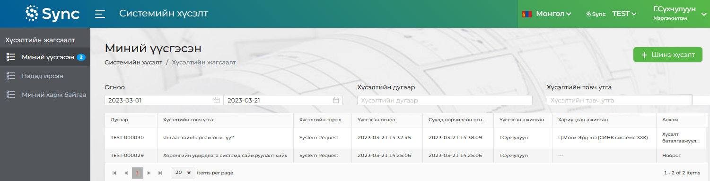
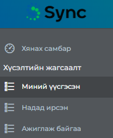

Энэхүү програм нь ERP системд ашиглагдаж байгаа функц модулиудын ажиллагаатай холбоотой хэрэглэгчийн санал хүсэлтийг
(Сайжруулалт, нэмэлт хөгжүүлэлт, алдаа засварлах гэх мэт) хүлээн авч шийдвэрлэх, хариу өгөх, мөн хэрэглэгч,
хөгжүүлэгч 2-ын ажлын уялдаа холбоог сайжруулах зорилготой программ юм.
Програмд нэвтрэн ороход програмын Нүүр хуудас харагдах бөгөөд Үндсэн цонх, Хүсэлтийн жагсаалт
гэсэн 2 хэсгээс
бүрдэнэ.


Хүсэлтийн жагсаалт 1. Миний үүсгэсэн 2. Надад ирсэн 3. Ажиглаж байгаа гэсэн 3 үндсэн хэсгээс бүрдэнэ.